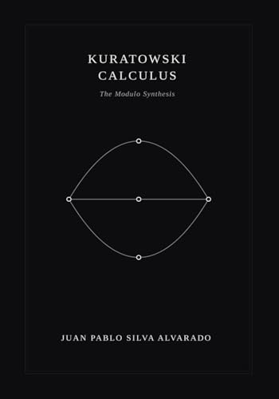

Research
The Kuratowski Calculus
A framework for discrete spacetime built on causal set theory and graph planarity. The central object is a finite directed acyclic graph whose local topology is constrained by Kuratowski's theorem. The calculus studies what emerges when planarity violations are resolved dynamically.
Discrete Spacetime & Combinatorial Topology
My work sits at the intersection of causal set theory, graph theory, and combinatorics. I study how topological obstructions in finite posets—specifically K₅ and K₃₃ subdivisions—can serve as a dynamical principle, and what physical structure this implies.
Current Direction
The programme explores whether a minimal combinatorial substrate—a Poisson-sprinkled DAG with planarity enforcement—is sufficient to reproduce known physics. Ongoing work includes numerical simulation, formal verification in Lean 4, and the development of a hadron spectrum from Kirchhoff polynomial counting on causal subgraphs.
Computational Tools
FEG_prism
A Rust simulation engine for exploring the Kuratowski Calculus numerically. Each realization passes through Poisson sprinkling, Kuratowski contraction, spectral dimension measurement, and 15 topological measurements (M1–M15). Designed for ensemble statistics at scale—O(N) per realization, deterministic seeding, binary checkpointing.
# Run a quick 6-realization ensemble
$ cargo run --release --bin feg_prism -- \
50000 6 ../data/quick_full --inmemory \
--measure-lagrangian --seed 42Publications

The Kuratowski Calculus: Modulo Synthesis
The foundational mathematical framework. 10 chapters covering discrete calculus, emergent gravity, dessins d'enfants, hadron spectrum, particle decay, and modular interference. 110+ pages with formal axiom reference.
Available on AmazonFractal Entropic Geometrodynamics
The Rust simulation engine for the Kuratowski Calculus. 15 measurement modules, adaptive ensemble averaging, binary checkpointing, and deterministic seeding for reproducible topological experiments.
The 1/3–2/3 Poset Conjecture
Formal proof architecture for the Kislitsyn-Fredman conjecture. Six-phase proof by contradiction, partially formalized in Lean 4 with Mathlib 4.
Conduct Medicine
A bilingual medical education platform covering multiple clinical specialties. Built with Vite, Tailwind CSS, and Python automation for structured content generation, search indexing, and modular specialty pages.
Open Source
fractal_entropic_geometrodynamics
Rust · MIT
Simulation engine for the Kuratowski Calculus.one_third_two_thirds
Lean 4
Formal proof of the 1/3-2/3 Poset Conjecture.conduct_medicine
JavaScript · Python · Tailwind
Bilingual medical education platform. Multi-specialty clinical content with automated navigation and search.